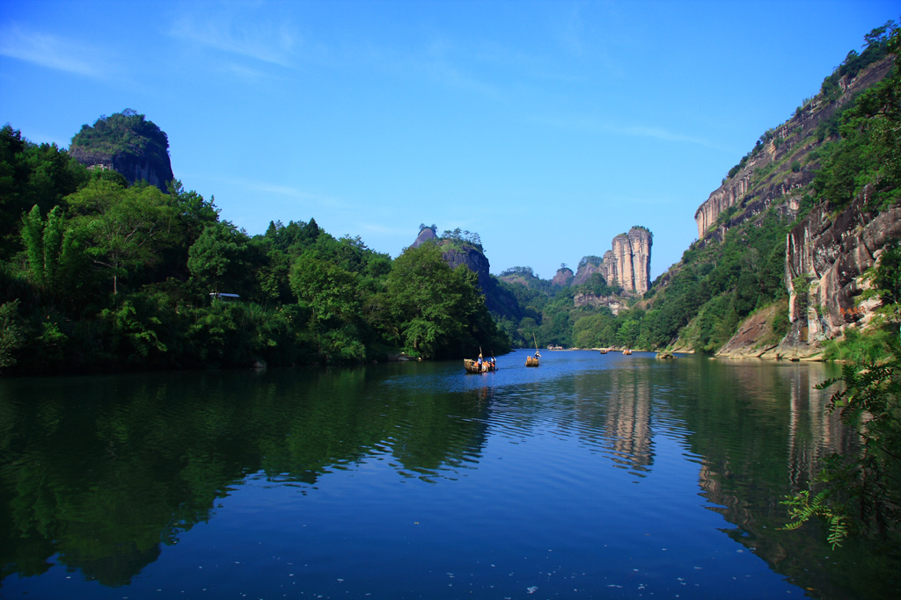
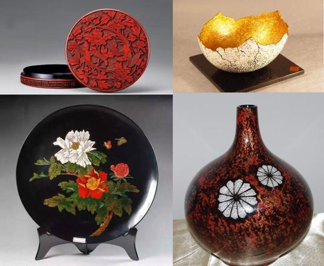
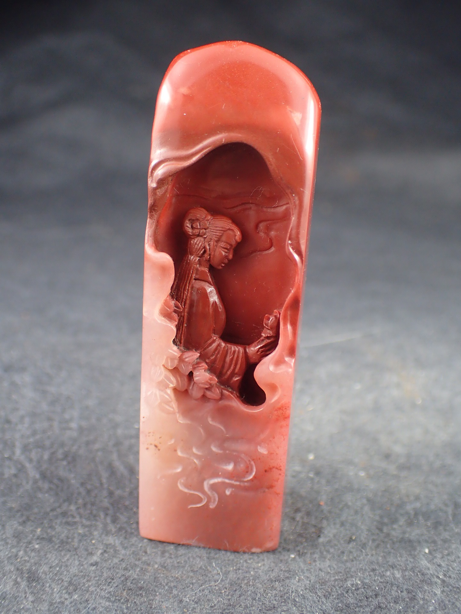

武夷山（ぶいさん）は山水の名勝として有名で、黄山、桂林と並び中国人が人生一度は訪れたいとされる場所の一つとされる。 1999年以降ユネスコの世界遺産（複合遺産）に登録。

漆器づくりは南宋（1127～1279年）時代に始まり、清代には非常に盛んになっていた。 脱胎の技法で作られた漆器は美しく、軽くて丈夫で水に浸しても変形したり退色することがない。

寿山石は印材だけではなく、彫刻の素材として使われるほか、災難から身を守ってくれる魔除けとしても身に付けられてきました。 寿山石で作られた印章、彫刻は高い価値がつくものも多く、非常に高い人気を集めています。